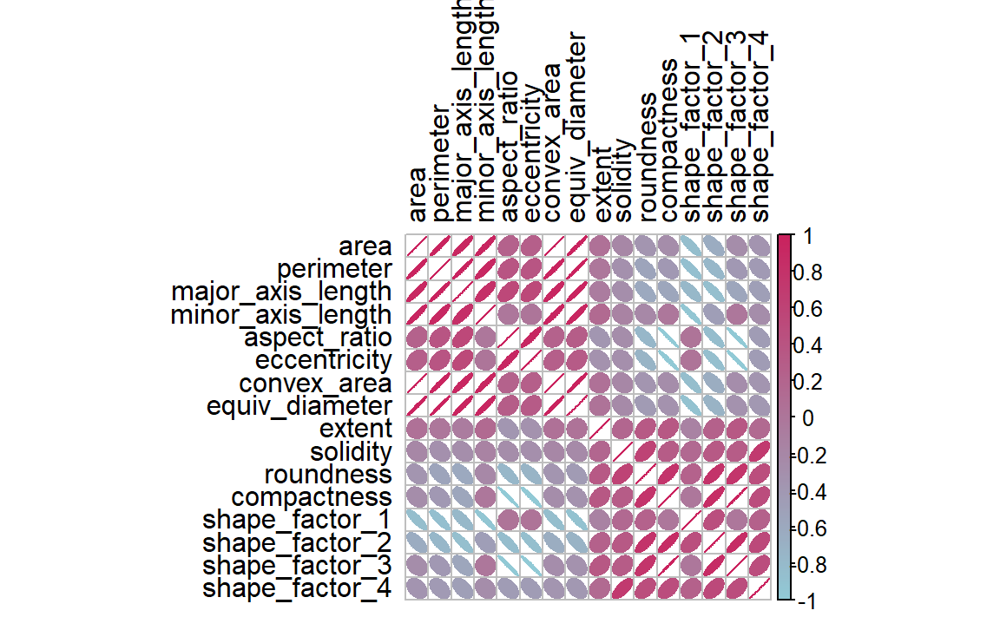
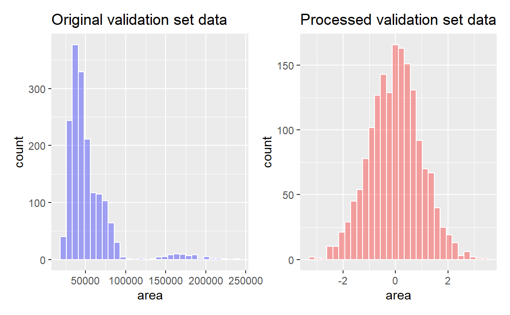
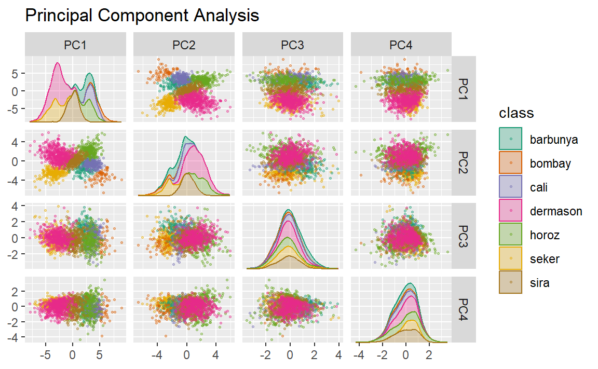
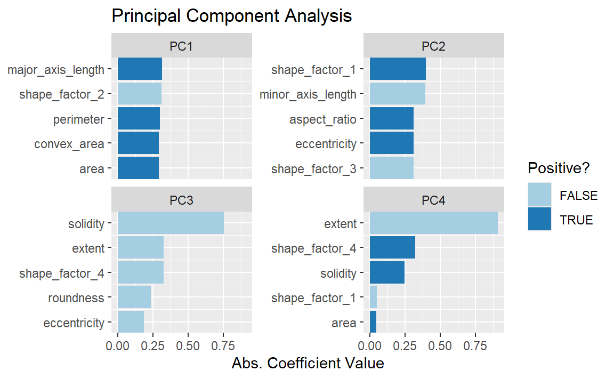
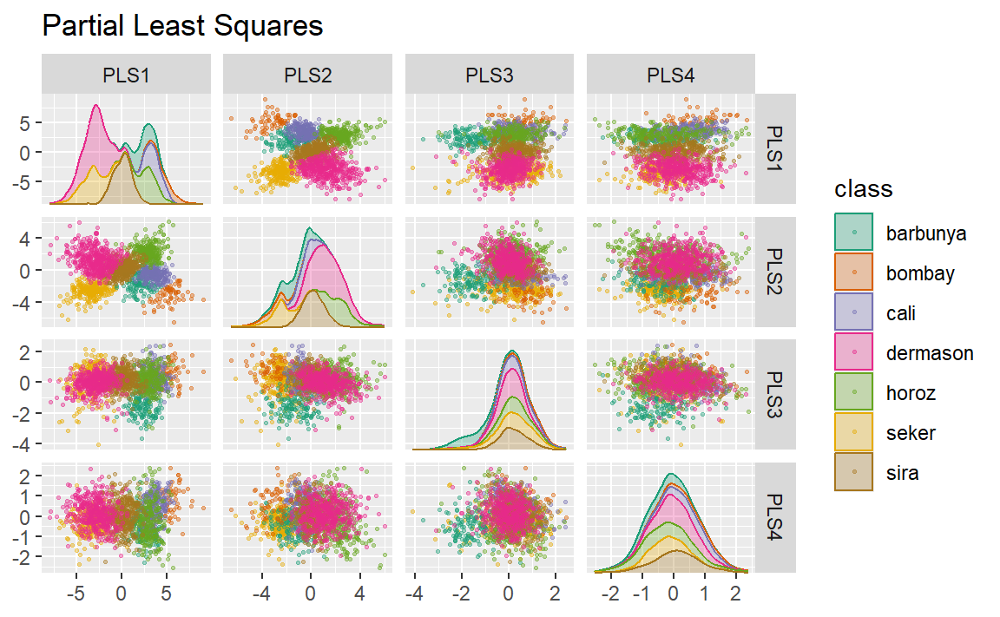
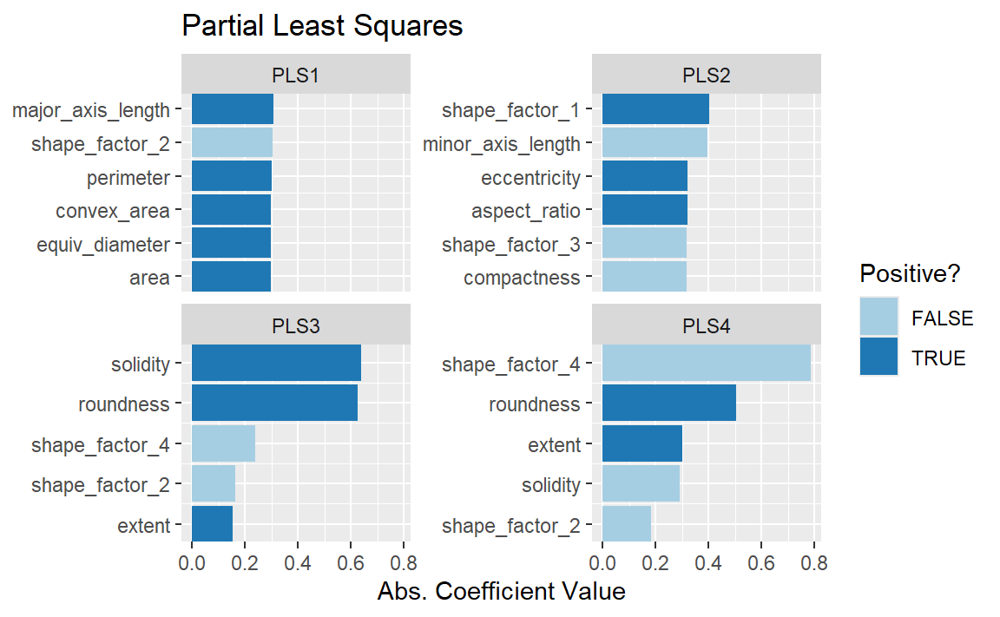
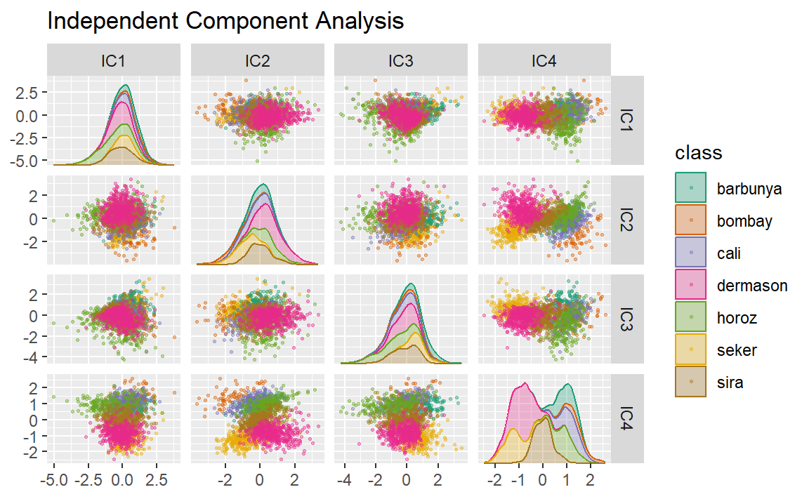
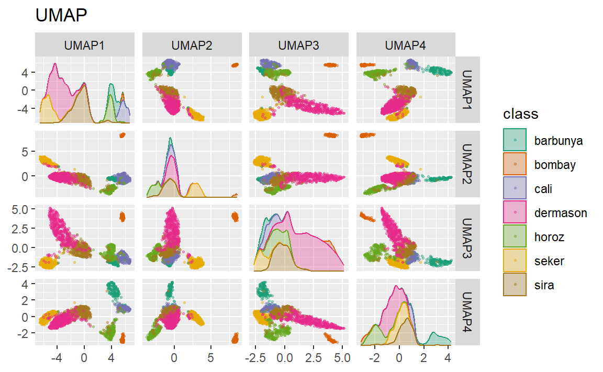
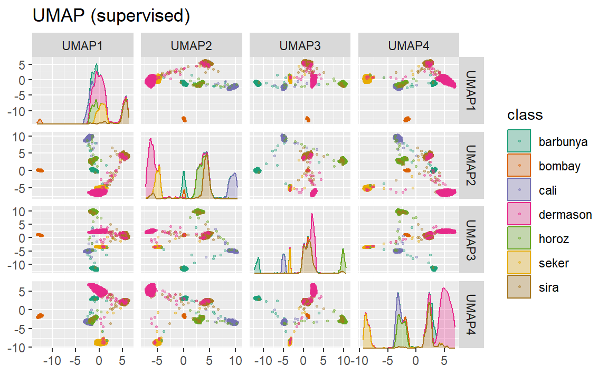
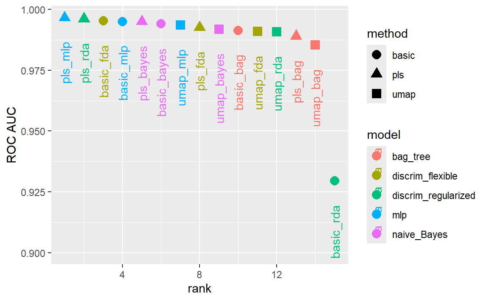

library(tidymodels)
#> ── Attaching packages ─────────────────────────────────── tidymodels 1.4.1 ──
#> ✔ broom 1.0.9 ✔ recipes 1.3.1
#> ✔ dials 1.4.2 ✔ rsample 1.3.1
#> ✔ dplyr 1.1.4 ✔ tailor 0.1.0
#> ✔ ggplot2 3.5.2 ✔ tidyr 1.3.1
#> ✔ infer 1.0.9 ✔ tune 2.0.0
#> ✔ modeldata 1.5.1 ✔ workflows 1.3.0
#> ✔ parsnip 1.3.3 ✔ workflowsets 1.1.1
#> ✔ purrr 1.1.0 ✔ yardstick 1.3.2
#> ── Conflicts ────────────────────────────────────── tidymodels_conflicts() ──
#> ✖ purrr::discard() masks scales::discard()
#> ✖ dplyr::filter() masks stats::filter()
#> ✖ dplyr::lag() masks stats::lag()
#> ✖ recipes::step() masks stats::step()
tidymodels_prefer()
library(beans)16 Dimensionality Reduction
降维技术将数据集从高维空间转换为低维空间，当你觉得变量“过多”时，这可能是一个不错的选择。通常，过多的变量（尤其是预测变量）会带来问题，因为随着维度的增加，数据变得难以理解或可视化。
What Problems Can Dimensionality Reduction Solve?
降维技术既可用于特征工程，也可用于探索性数据分析。例如，在高维度的生物学实验中，任何建模之前，首要任务之一便是确定数据中是否存在不希望出现的趋势（比如批次等与研究问题无关的影响）。当数据维度高达数十万时，调试数据往往颇具挑战性，而降维则能有效帮助进行探索性数据分析。
预测变量过多的另一个潜在后果，可能是对模型造成损害。最简单的例子就是普通线性回归法：在这种方法中，预测变量的数量应少于用于拟合模型的数据点数量。此外，多重共线性也是一个问题——当不同预测变量之间存在高度相关性时，这会负面地影响用于估计模型的数学运算。如果预测变量的数量多到极致，现实中真正起作用的潜在效应却极有可能远不及此数。换句话说，某些预测变量可能实际上是在测量相同的潜在效应，从而导致它们彼此高度相关。而许多降维技术恰恰擅长处理这种情况——事实上，大多数降维方法只有在预测变量间存在可被有效利用的相关关系时，才能发挥出色效果。
在启动一个新的建模项目时，降低数据的维度或许能帮助你初步了解建模问题的难度。
主成分分析（PCA）是减少数据集中列数最直接的方法之一，因为它基于线性方法且属于无监督学习（即不考虑目标数据）。对于高维分类问题，初步绘制出主要的PCA成分图后，可能会清晰地看到各类别之间的分离。如果确实如此，那么可以较为稳妥地认为，一个线性分类器或许能取得不错的效果。然而，情况并非总是如此——即使未观察到明显分离，也并不意味着问题无法解决。
本章讨论的降维方法通常并非特征选择方法。例如，PCA等方法是用一组较少的新特征来表示原始预测变量，而计算这些新特征时仍需用到所有原始预测变量。不过，稀疏方法是个例外，它们能够在构建新特征时彻底消除某些预测变量的影响。
本章有两个目标：
- 展示如何利用recipe创建一组精简的特征，以捕捉原始预测变量集的主要特性。
- 说明recipe如何单独使用（而非像第8.2节中那样嵌入工作流对象中）。
后者在测试或调试recipe对象时非常有用。然而，如第8.2节所述，将recipe对象用于建模的最佳方式是通过工作流对象来实现。
除了tidymodels包，本章还使用了以下包：baguette、beans、bestNormalize、corrplot、discrim、embed、ggforce、klaR、learntidymodels、mixOmics以及uwot。
A Picture Is Worth a Thousand… Beans
让我们通过一个示例数据集，结合具体recipe对象，逐步讲解如何使用降维技术。Koklu 和 Ozkan（2020）发表了一组关于干豆视觉特征的数据集，并详细介绍了从图像中识别干豆品种的方法。尽管与许多现实世界中的建模问题相比，这些数据的维度并不算高，但它却提供了一个绝佳的实践案例，帮助我们演示如何有效减少特征数量。摘自他们的论文：
每张图像中都包含多种豆类。确定哪些像素对应于特定豆类的过程被称为图像分割。这些像素可被进一步分析，以提取每种豆类的特征，例如颜色和形态学（即形状）。随后，这些特征将被用于建立模型，以预测豆类的品种——因为不同品种的豆类外观各异。训练数据来源于一组经过人工标注的图像，利用这些数据构建出一个预测模型，能够准确区分卡利、霍罗兹、德玛森、塞克尔、孟买、巴尔布尼亚和西拉这七种豆类品种。开发出高效模型后，制造商便能更精确地评估一批豆类的均匀性。
有许多方法可用于量化物体的形状（Mingqiang、Kidiyo 和 Joseph，2008）。其中许多方法与感兴趣物体的边界或区域相关。特征示例包括：
该区域（或面积）可通过对物体中的像素数量，或围绕物体的凸包大小进行估算。
我们可以用边界上的像素数量以及包围框的面积来测量周长（包围框是指包含物体的最小矩形）。
长轴量化了连接物体最外侧部分的最长直线；短轴则与长轴垂直。
我们可以通过比较物体的面积与具有相同周长的圆的面积之比，来衡量物体的紧凑程度。例如，“•”和“×”这两个符号的紧凑性就大不相同。
此外，还有多种衡量物体是否细长或椭圆程度的指标。例如，偏心率是长轴与短轴之比；此外，还有与之相关的圆形度和凸度估算方法。
请注意 Figure 1 中不同形状的偏心率。圆形和方形等形状的偏心率较低，而长条形则具有较高值。此外，该度量指标不受物体旋转的影响。

这些图像特征中许多具有高度相关性；面积较大的物体往往也拥有较长的周长。此外，通常存在多种方法来量化同一基本特性（例如尺寸）。
在豆类数据中，计算了16个形态特征：面积、周长、长轴长度、短轴长度、长宽比、偏心率、凸面积、等效直径、延伸度、坚实度、圆度、紧凑度、形状因子1、形状因子2、形状因子3和形状因子4。其中，后四个特征已在Symons和Fulcher（1988）中进行了详细描述。
我们可以从加载数据开始：
在评估降维技术时，保持良好的数据规范至关重要，尤其计划在模型中使用这些技术时。
在我们的分析中，我们首先使用initial_split()保留一个测试集。剩余的数据则被划分为训练集和验证集：
set.seed(1601)
bean_split <- initial_validation_split(beans, strata = class, prop = c(0.75, 0.125))
#> Warning: Too little data to stratify.
#> • Resampling will be unstratified.
bean_split
#> <Training/Validation/Testing/Total>
#> <10206/1702/1703/13611>
# Return data frames:
bean_train <- training(bean_split)
bean_test <- testing(bean_split)
bean_validation <- validation(bean_split)
set.seed(1602)
# Return an 'rset' object to use with the tune functions:
bean_val <- validation_set(bean_split)
bean_val$splits[[1]]
#> <Training/Validation/Total>
#> <10206/1702/11908>为了直观评估不同方法的性能，我们可以在训练集（n = 10,206）颗豆子上对这些方法进行估计，并利用验证集（n = 1,702）展示结果。
在开始任何降维之前，我们可以花些时间探索一下我们的数据。由于我们知道这些形状特征中许多可能测量的是相似的概念，让我们通过以下代码来看看 Figure 2 中数据的相关结构。

这些预测因子中有很多高度相关，例如面积与周长，或形状因子2和3。尽管我们在此不花时间详细分析，但同样重要的是要考察这种相关结构是否在不同类别结果间显著变化。这有助于构建更优质的模型。
A Starter Recipe
是时候在更小的范围内查看豆类数据了。我们可以从一个基本的预处理流程入手，以便在进行任何降维步骤之前对数据进行初步处理。其中一些预测变量是比率，因此很可能呈现偏态分布。而这种分布可能会严重干扰方差计算（例如主成分分析中所用的方差计算）。为此，bestNormalize 包提供了一个步骤，能够强制使预测变量的分布呈对称状态。我们将利用这一方法来有效缓解偏态分布带来的问题：
library(bestNormalize)
bean_rec <-
# Use the training data from the bean_val split object
recipe(class ~ ., data = bean_train) %>%
step_zv(all_numeric_predictors()) %>%
step_orderNorm(all_numeric_predictors()) %>%
step_normalize(all_numeric_predictors())记住，调用recipe()函数时，步骤函数step_*()不会以任何方式被估算或执行。
这个recipe对象将增加用于降维分析的额外步骤。在进行这些步骤之前，我们先来了解一下如何在工作流程之外使用recipe对象。
Recipes in the Wild
正如第8.2节所述，包含recipe对象的工作流使用fit()来估计配方和模型，然后使用predict()处理数据并生成模型预测。在recipes包中也有类似的函数，可用于实现相同的目的：
prep(recipe, training)将recipe对象适配到训练集。bake(recipe, new_data)应用recipe对象到new_data。
Figure 3 对此进行了总结。让我们更详细地探讨这些功能中的每一项。

Preparing a recipe
让我们使用训练集数据来估计bean_rec，并执行prep(bean_rec)：
bean_rec_trained <- prep(bean_rec)
bean_rec_trained
#>
#> ── Recipe ───────────────────────────────────────────────────────────────────
#>
#> ── Inputs
#> Number of variables by role
#> outcome: 1
#> predictor: 16
#>
#> ── Training information
#> Training data contained 10206 data points and no incomplete rows.
#>
#> ── Operations
#> • Zero variance filter removed: <none> | Trained
#> • orderNorm transformation on: area perimeter, ... | Trained
#> • Centering and scaling for: area perimeter, ... | Trained请注意，输出中显示步骤已训练完成，且选择器不再是一般性的（即不再使用all_numeric_predictors()），而是直接列出了实际选定的列。此外，prep(bean_rec) 不再需要training参数。你可以向该参数传递任何数据，但若省略，则将使用最初调用recipe()时提供的原始数据data——在本例中，即训练集数据。
prep()的一个重要参数是retain。当retain = TRUE（默认值）时，训练集的预处理版本会被保留在recipe对象中。这一数据集已按照recipe对象中列出的所有步骤完成预处理。由于prep()在执行过程中需要逐步应用这些步骤，因此保留该版本的训练集将大有裨益——这样，若后续仍需使用该数据集，便可避免重复计算。不过，如果训练集本身规模庞大，将如此大量的数据存储于内存中可能会带来问题。此时，建议设置retain = FALSE，以规避这一风险。
当向此预估recipe对象中添加新步骤后，重新应用prep()将仅估算未训练的步骤。这在我们尝试不同特征提取方法时将非常有用。如果在使用recipe对象遇到错误时，可以结合prep()的verbose选项进行故障排除：
bean_rec_trained %>%
step_dummy(cornbread) %>% # <- not a real predictor
prep(verbose = TRUE)
#> oper 1 step zv [pre-trained]
#> oper 2 step orderNorm [pre-trained]
#> oper 3 step normalize [pre-trained]
#> oper 4 step dummy [training]
#> Error in `step_dummy()`:
#> Caused by error in `prep()`:
#> ! Can't select columns that don't exist.
#> ✖ Column `cornbread` doesn't exist.另一个有助于你了解分析中发生情况的选项是log_changes：
show_variables <-
bean_rec %>%
prep(log_changes = TRUE)
#> step_zv (zv_RLYwH): same number of columns
#>
#> step_orderNorm (orderNorm_Jx8oD): same number of columns
#>
#> step_normalize (normalize_GU75D): same number of columnsBaking the recipe
使用bake()方法处理recipe对象，就像在模型中使用predict()方法一样；即，从训练集估算出的操作会被应用到任何数据上，比如测试数据或预测时的新数据。例如，可以对验证集样本进行处理：
bean_val_processed <- bake(bean_rec_trained, new_data = bean_validation)Figure 4 展示了配方制备前后面积预测器的直方图。
library(patchwork)
p1 <-
bean_validation %>%
ggplot(aes(x = area)) +
geom_histogram(bins = 30, color = "white", fill = "blue", alpha = 1 / 3) +
ggtitle("Original validation set data")
p2 <-
bean_val_processed %>%
ggplot(aes(x = area)) +
geom_histogram(bins = 30, color = "white", fill = "red", alpha = 1 / 3) +
ggtitle("Processed validation set data")
p1 + p2

area predictor before and after preprocessing
这里有两个值得注意的bake()重要方面。
首先，如前所述，使用prep(recipe, retain = TRUE)会保留配方中已处理的训练集版本。这使得用户能够调用bake(recipe, new_data = NULL)，从而直接返回该数据集，而无需进一步计算。例如：
如果训练集规模并不庞大，使用这个保留值可以节省大量计算时间。
其次，可以在调用中使用额外的选择器，以指定要返回哪些列。默认选择器是everything()，但也可使用更具体的指令。
Feature Extraction Techniques
由于在tidymodels中，recipe对象是进行降维的首选方法，因此我们来编写一个函数，用于估计变换，并通过ggforce包绘制出结果数据的散点图矩阵：
library(ggforce)
plot_validation_results <- function(recipe, dat = bean_validation) {
recipe %>%
# Estimate any additional steps
prep() %>%
# Process the data (the validation set by default)
bake(new_data = dat) %>%
# Create the scatterplot matrix
ggplot(aes(x = .panel_x, y = .panel_y, color = class, fill = class)) +
geom_point(alpha = 0.4, size = 0.5) +
geom_autodensity(alpha = .3) +
facet_matrix(vars(-class), layer.diag = 2) +
scale_color_brewer(palette = "Dark2") +
scale_fill_brewer(palette = "Dark2")
}在本章中，我们将多次使用此函数。
这里探讨了一系列特征提取方法。关于这些方法的概述，可参见 M. Kuhn 和 Johnson（2020）第6.3.1节及其参考文献。UMAP方法则在McInnes、Healy 和 Melville（2020）中有所介绍。
Principal component analysis
我们已经在本书中多次提到过PCA，现在是时候深入探讨了。PCA是一种无监督方法，它通过预测变量的线性组合来定义新特征。这些特征力求尽可能地捕捉原始数据中的变异信息。我们将在原始流程中加入step_pca()函数，并利用该函数在验证集上可视化结果，如 Figure 5 所示：
bean_rec_trained %>%
step_pca(all_numeric_predictors(), num_comp = 4) %>%
plot_validation_results() +
ggtitle("Principal Component Analysis")

我们发现，前两个主成分PC1和PC2，尤其是当它们结合使用时，能够有效地区分或分离各个类别。这或许使我们预期，整体上对这些豆类进行分类的问题并不会特别棘手。
请记住，PCA 是无监督的。对于这些数据，结果表明，能够解释预测变量中最大变异性的 PCA 成分，恰好也能用于预测类别。那么，究竟是哪些特征在推动模型表现呢？learnedtidymodels 包中提供了有助于可视化每个成分顶部特征的函数，见 Figure 6 。为此，我们需要预先准备好的recipe对象；PCA 步骤已添加到以下代码中，并同时调用了prep()函数：
library(learntidymodels)
#> Loading required package: tidyverse
#> ── Attaching core tidyverse packages ───────────────────── tidyverse 2.0.0 ──
#> ✔ forcats 1.0.0 ✔ stringr 1.5.1
#> ✔ lubridate 1.9.4 ✔ tibble 3.2.1
#> ✔ readr 2.1.5
#> ── Conflicts ─────────────────────────────────────── tidyverse_conflicts() ──
#> ✖ readr::col_factor() masks scales::col_factor()
#> ✖ purrr::discard() masks scales::discard()
#> ✖ dplyr::filter() masks stats::filter()
#> ✖ stringr::fixed() masks recipes::fixed()
#> ✖ dplyr::lag() masks stats::lag()
#> ✖ readr::spec() masks yardstick::spec()
#> ℹ Use the conflicted package (<http://conflicted.r-lib.org/>) to force all conflicts to become errors
bean_rec_trained %>%
step_pca(all_numeric_predictors(), num_comp = 4) %>%
prep() %>%
plot_top_loadings(component_number <= 4, n = 5) +
scale_fill_brewer(palette = "Paired") +
ggtitle("Principal Component Analysis")

最主要的加载项大多与先前相关性图左上角所示的一组相关预测因子有关：周长、面积、主轴长度和凸包面积。这些指标均与豆子的大小密切相关。此外，根据 Symons 和 Fulcher（1988）提出的“shape factor 2”，即面积除以主轴长度的立方，同样与豆子大小相关。而伸长率的度量似乎主导了第二主成分。
Partial least squares
我们在第13.5.1节中介绍的PLS，是PCA的一种有监督版本。它试图找到既能最大程度地反映预测变量的变异，又能最大化这些成分与结果之间关系的主成分。Figure 7 展示了这一经过略微修改的PCA代码的运行结果：
bean_rec_trained %>%
step_pls(all_numeric_predictors(), outcome = "class", num_comp = 4) %>%
plot_validation_results() +
ggtitle("Partial Least Squares")

Figure 7 中绘制的前两个PLS成分与前两个PCA成分几乎完全相同！我们得出这一结论，是因为这些PCA成分在区分不同种类的豆子时表现得极为出色。而其余的成分则有所不同。Figure 8 则直观展示了各成分的载荷，即每种成分的首要特征。
bean_rec_trained %>%
step_pls(all_numeric_predictors(), outcome = "class", num_comp = 4) %>%
prep() %>%
plot_top_loadings(component_number <= 4, n = 5, type = "pls") +
scale_fill_brewer(palette = "Paired") +
ggtitle("Partial Least Squares")

坚实度（即豆子的密度）与圆润度共同决定了第三个PLS成分。其中，坚实度可能捕捉到了与豆子表面“凹凸不平”相关的特征，因为它能够精确测量豆粒边界的不规则程度。
Independent component analysis
ICA与PCA略有不同，因为它寻找的是彼此间尽可能统计独立的成分（而非仅仅不相关）。可以说，ICA旨在最大化ICA成分的“非高斯性”，或者说是分离信息，而非像PCA那样通过压缩信息来实现降维。现在，让我们使用step_ica()函数生成 Figure 9 ：
bean_rec_trained %>%
step_ica(all_numeric_predictors(), num_comp = 4) %>%
plot_validation_results() +
ggtitle("Independent Component Analysis")

观察这一图谱，使用ICA时，前几个主成分中各类别之间似乎没有明显分离。这些独立（或尽可能独立）的成分并未有效区分不同类型的豆子。
Uniform manifold approximation and projection
UMAP 与流行的非线性降维方法 t-SNE 类似。在原始的高维空间中，UMAP 采用基于距离的最近邻方法，寻找数据中那些点之间更可能存在关联的局部区域。这些数据点之间的关系被保存为一个有向图模型，其中大部分点之间并不相连。
随后，UMAP 将图中的点映射到降维后的空间中。为此，该算法采用了一种优化过程，利用交叉熵将数据点映射到更少数量的特征上，从而实现对原始图的精确近似。
为了创建映射，embed 包中包含了一个用于该方法的步骤函数，如 Figure 10 所示。

尽管类间空间明显存在，但每个簇内可能包含多种不同的类别。
还有一种受监督的UMAP版本：
bean_rec_trained %>%
step_umap(all_numeric_predictors(), outcome = "class", num_comp = 4) %>%
plot_validation_results() +
ggtitle("UMAP (supervised)")

Figure 11 中展示的监督方法在数据建模方面前景可观。
UMAP 是一种强大的降维方法，但它对调参非常敏感（例如，邻域数量等参数）。因此，建议尝试调整几个参数，以评估结果在这些数据上的稳健性。
Modeling
PLS 和 UMAP 方法都值得结合不同模型进行深入研究。让我们借助这些降维技术（以及完全不进行任何变换的情况），探索多种不同的模型：单层神经网络、Bagged 树、柔性判别分析（FDA）、朴素贝叶斯，以及正则化判别分析（RDA）。
现在我们已重新进入“建模模式”，将创建一系列模型规范，然后使用工作流集在以下代码中调优这些模型。请注意，模型参数是与配方参数协同调整的（例如，降维后的维度大小、UMAP 参数）。
library(baguette)
library(discrim)
#> Warning: package 'discrim' was built under R version 4.4.3
mlp_spec <-
mlp(hidden_units = tune(), penalty = tune(), epochs = tune()) %>%
set_engine("nnet") %>%
set_mode("classification")
bagging_spec <-
bag_tree() %>%
set_engine("rpart") %>%
set_mode("classification")
fda_spec <-
discrim_flexible(
prod_degree = tune()
) %>%
set_engine("earth")
rda_spec <-
discrim_regularized(frac_common_cov = tune(), frac_identity = tune()) %>%
set_engine("klaR")
bayes_spec <-
naive_Bayes() %>%
set_engine("klaR")我们还需要用于尝试的降维方法的配方。让我们从基础recipe对象bean_rec开始，然后逐步添加不同的降维步骤：
bean_rec <-
recipe(class ~ ., data = bean_train) %>%
step_zv(all_numeric_predictors()) %>%
step_orderNorm(all_numeric_predictors()) %>%
step_normalize(all_numeric_predictors())
pls_rec <-
bean_rec %>%
step_pls(all_numeric_predictors(), outcome = "class", num_comp = tune())
umap_rec <-
bean_rec %>%
step_umap(
all_numeric_predictors(),
outcome = "class",
num_comp = tune(),
neighbors = tune(),
min_dist = tune()
)再次，workflowsets 包将预处理器与模型进行交叉组合。同时，控制control选项parallel_over被设置为启用并行处理，以便能够同时对多种调参组合展开优化。workflow_map()函数则针对 10 种参数组合，应用网格搜索法来优化模型及预处理参数（如适用）。最后，在验证集上估算多分类 ROC 曲线下的面积。
ctrl <- control_grid(parallel_over = "everything")
bean_res <-
workflow_set(
preproc = list(basic = class ~ ., pls = pls_rec, umap = umap_rec),
models = list(
bayes = bayes_spec, fda = fda_spec,
rda = rda_spec, bag = bagging_spec,
mlp = mlp_spec
)
) %>%
workflow_map(
verbose = TRUE,
seed = 1603,
resamples = bean_val,
grid = 10,
metrics = metric_set(roc_auc),
control = ctrl
)我们可以通过模型在验证集上估计的ROC曲线下的面积对其进行排序，如 Figure 12 ：
rankings <-
rank_results(bean_res, select_best = TRUE) %>%
mutate(method = map_chr(wflow_id, ~ str_split(.x, "_", simplify = TRUE)[1]))
tidymodels_prefer()
filter(rankings, rank <= 5) %>% dplyr::select(rank, mean, model, method)
#> # A tibble: 5 × 4
#> rank mean model method
#> <int> <dbl> <chr> <chr>
#> 1 1 0.997 mlp pls
#> 2 2 0.996 discrim_regularized pls
#> 3 3 0.995 discrim_flexible basic
#> 4 4 0.995 mlp basic
#> 5 5 0.995 naive_Bayes pls

从这些结果可以看出，大多数模型的表现都非常出色；这里几乎没有糟糕的选择。为了演示，我们将使用结合了PLS特征的RDA模型作为最终模型。接下来，我们将以数值上最优的参数确定工作流程，先将其拟合到训练集，再用测试集进行评估：
我们在测试集上该指标（多分类ROC AUC）的结果是什么？
collect_metrics(rda_res)
#> # A tibble: 1 × 4
#> .metric .estimator .estimate .config
#> <chr> <chr> <dbl> <chr>
#> 1 roc_auc hand_till 0.995 pre0_mod0_post0很不错！我们将在下一章中使用这个模型，来展示变量重要性分析方法。
Chapter Summary
降维方法既可用于探索性数据分析，也可用于建模。recipes和embed包中包含了多种不同方法的步骤，而工作流集则有助于根据数据集的特点选择合适的方法。本章还探讨了如何单独使用recipes对象，无论是用于调试recipe对象中的问题，还是直接应用于探索性数据分析与数据可视化。